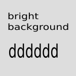
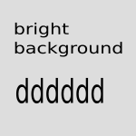

Images and figures
This page
Bright images with border and shadow


 


Bright images with border
Bright images with shadow
Bright images as figures with caption
Image with border and shadow and background color #ffffff
Image with border and shadow and background color #f8f8f8
Image with border and shadow and background color #eeeeee
Image with border and shadow and background color #dddddd
Image with border and shadow and background color #cccccc
Image float left
Typesetting is the composition of text by means of arranging physical
types[1] or the digital equivalents. Stored letters and other symbols
(called sorts in mechanical systems and glyphs in digital systems)
are retrieved and ordered according to a language's orthography for
visual display.
Floating cleared. Below the image. Typesetting is the composition of text by means of arranging physical types[1] or the digital equivalents. Stored letters and other symbols (called sorts in mechanical systems and glyphs in digital systems) are retrieved and ordered according to a language's orthography for visual display.
Typesetting is the composition of text by means of arranging physical
types[1] or the digital equivalents. Stored letters and other symbols
(called sorts in mechanical systems and glyphs in digital systems)
are retrieved and ordered according to a language's orthography for
visual display.
Floating cleared. Below the image. Typesetting is the composition of text by means of arranging physical types[1] or the digital equivalents. Stored letters and other symbols (called sorts in mechanical systems and glyphs in digital systems) are retrieved and ordered according to a language's orthography for visual display.
Images and Admonitions
New in version 13.3
EXT:form offers a site set that can be included as described here. quickstartIntegrators are still possible for compatibility reasons but not recommended anymore.
Include the site set "Form Framework" via the :site set in the site configuration or the custom site package's site set.
Add the site set "Form Framework"
Note
configuration or the custom site package's site set.
Warning
configuration or the custom site package's site set.
-
Include the site set
New in version 13.3
EXT:form offers a site set that can be included as described here. quickstartIntegrators are still possible for compatibility reasons but not recommended anymore.
Include the site set "Form Framework" via the :site set in the site configuration or the custom site package's site set.
Add the site set "Form Framework"
Note
configuration or the custom site package's site set.